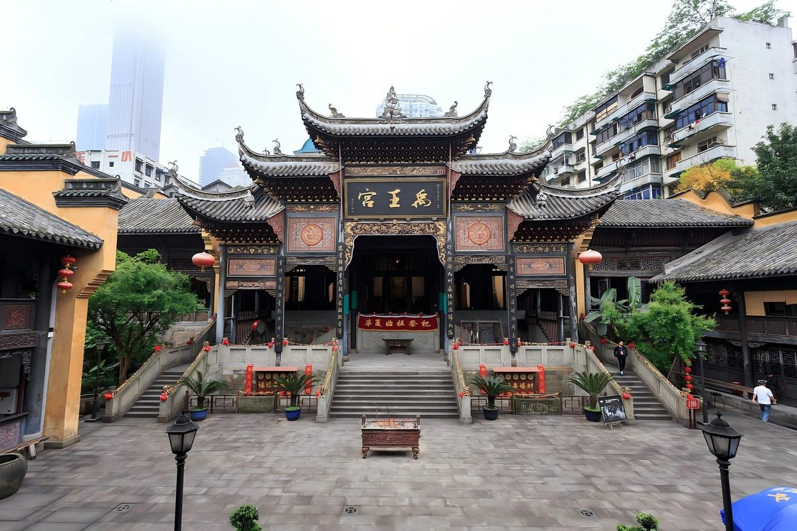

城市概览

重庆是一座"叠"起来的城市：江在低处，路在半山，楼顶可能是一条街，脚下却是另一个街区的地面。
两江之间的山城
长江自西南而来，嘉陵江自西北而下，在朝天门汇成一条大江。城市顺着两江的岸线与山脊生长， 于是有了轻轨穿楼、桥梁过江、爬坡上坎的日常。重庆因此被叫作"山城""雾都"，也被叫作"桥都"。
这里也是移民城市。清代"湖广填四川"之后，各地会馆在城中建起，湖广会馆、禹王宫这类建筑 就是那段移民史的实物证据。
一条时间线
| 时间 | 发生了什么 |
|---|---|
| 1891 年 | 重庆开埠，长江上游的商贸口岸由此打开 |
| 1929 年 | 正式建市，城市管理走向近代化 |
| 1997 年 | 成为直辖市，也是中国中西部唯一的直辖市 |
| 1999 年 | 大足石刻列入《世界遗产名录》 |
在重庆怎么玩（半天版）
| 顺序 | 地点 | 看点 |
|---|---|---|
| 1 | 湖广会馆 | 清代会馆建筑群，看戏台与院落 |
| 2 | 千厮门大桥 | 站在桥上看洪崖洞的灯 |
| 3 | 洪崖洞 | 吊脚楼式的夜景，天黑后最热闹 |
| 4 | 解放碑 | 城市中心，吃一顿火锅收尾 |